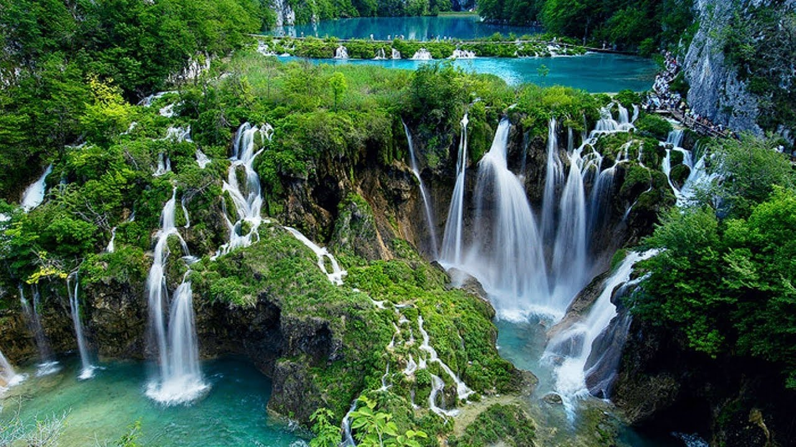
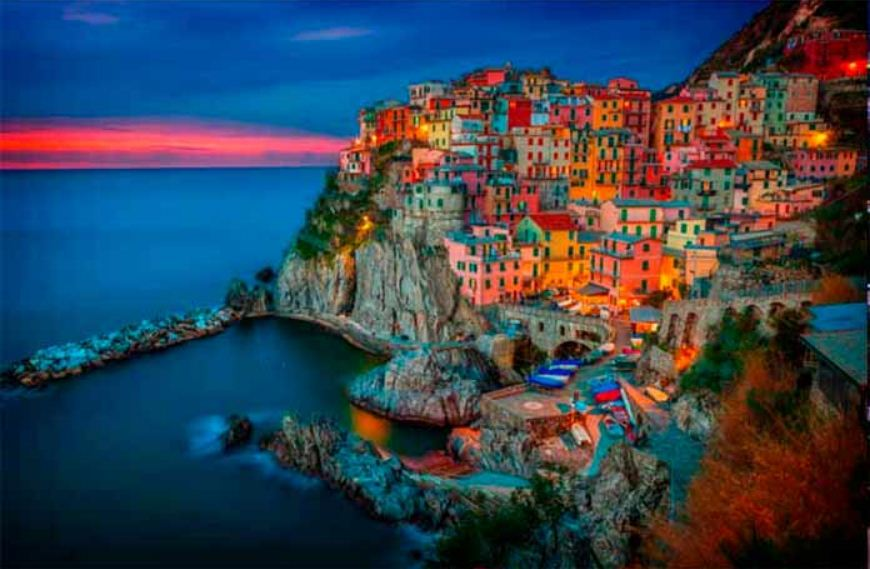
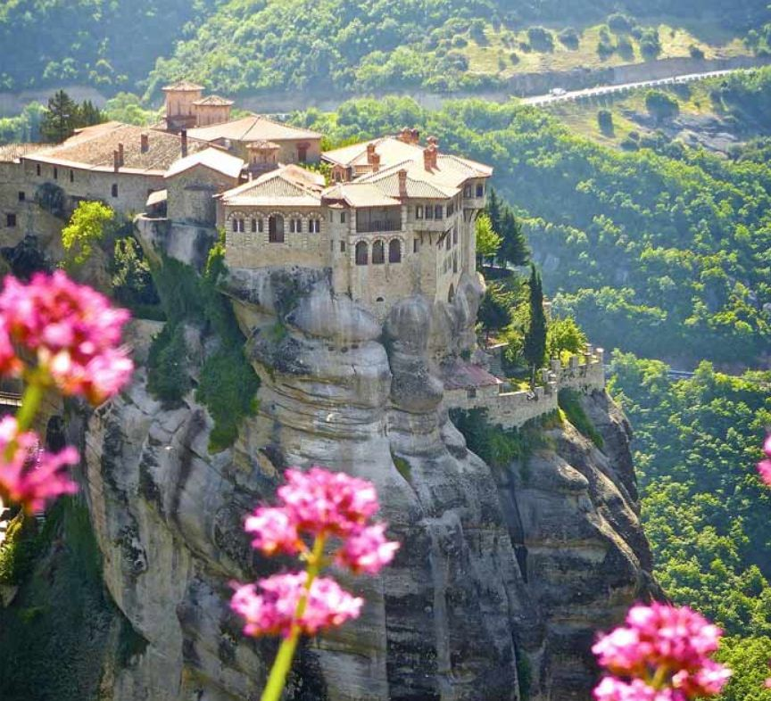

3 ყველაზე ლამაზი ადგილი ევროპაში, რომელიც აუცილებლად უნდა ნახოთ
ოველდღიურ ყოფაში, მუდმივ საზრუნავში, ხშირად გვავიწყდება, რომ ჩვენი საერთო სახლი, დედამიწა ულამაზესი და თვალუწვდენელია. მისი უმშვენიერესი ადგილების ჩამოთვლაც კი შეუძლებელია არა თუ მონახულება. ეს არის ადგილები, რომლებიც თავისი ბუნებრივი სილამაზით სუნთქვას გიკრავს და გულს გიჩქარებს.
დავიწყოთ მოგზაურობა მზიან იტალიაში მდებარე ამალფის სანაპიროდან. სორენტოს სამხრეთი სანაპირო იუნესკოს მსოფლიო საგანძურში შედის. თავისი ლამაზი სახელწოდება სანაპირომ პატარა ტურისტული ქალაქ ამალფიდან მიიღო.
შემდეგია საბერძნეთი, მისი ცნობილი დაკიდული მეტეორას მონასტრებით, რომლებიც იმსახურებენ იყვნენ მსოფლიოს საოცრებათა შორის, ისინი ხომ მთის მასივში კლდის მწვერვალზეა განლაგებული.